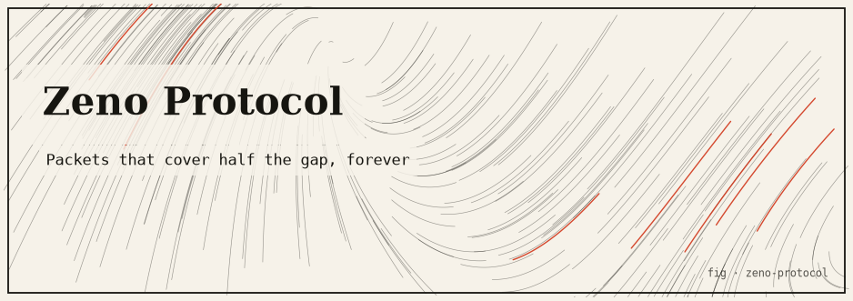

Zeno Protocol: the dichotomy paradox as a transport
Delivers a message by moving half the remaining distance every tick — transport built on Zeno’s dichotomy paradox. The series sums to 1; the message always arrives in finite time.

The idea
Around 450 BCE the philosopher Zeno of Elea posed a puzzle that has bothered thinkers ever since. To walk to a wall, he argued, you must first reach the point halfway there. But before you can reach the halfway point, you must reach the point a quarter of the way. And before that, an eighth. This regress never ends: there are infinitely many “first” sub-journeys to complete. Since you cannot finish infinitely many things, Zeno concluded that motion is impossible — even though we plainly walk to walls all the time.
The puzzle is not really about walls. It is about whether an infinite number of steps can add up to a finite total. For two thousand years the paradox had no clean answer; the modern resolution comes from the theory of convergent series. The distances 1/2, 1/4, 1/8, … form a geometric sequence whose sum is exactly 1. Infinitely many terms, finite total, finite time. The infinity lives in how we count the trip, not in the trip itself.
This package makes the paradox tangible by implementing it as a message-transport protocol. Each tick, the packet advances by exactly half of whatever distance still separates it from the destination. Watching the position climb 0.5, 0.75, 0.875, 0.9375… you can see the infinite series converging in real numbers, one line at a time.
What is a convergent geometric series?
A geometric series is a sum whose terms shrink by a constant ratio r each step:
a + ar + ar² + ar³ + …. When the ratio satisfies
|r| < 1, the terms fall away fast enough that the whole infinite sum settles on a finite
value, given by the closed form a / (1 − r). Here the first step is
a = 1/2 and the ratio is r = 1/2, so the total is (1/2) / (1 − 1/2) = 1 — exactly the
full distance.
The same closed form explains the position after a finite number of ticks. After n ticks the
packet has covered Pₙ = 1 − (1/2)ⁿ of the distance, with a
remaining gap of (1/2)ⁿ that halves every tick. It approaches 1 but never equals it;
this is the formal meaning of a limit. In everyday physics the gap simply becomes
smaller than any measurable quantity, which is why real walking “completes” the
journey.
How this project demonstrates it
Because the exact destination is a limit rather than a value the packet ever reaches, the protocol needs a stopping rule. It defines a convergence tolerance ε and declares the message “delivered” once the remaining gap drops below it. Since the gap is (1/2)ⁿ after n ticks, solving (1/2)ⁿ ≤ ε gives n = ⌈log₂(1/ε)⌉ ticks — a small, predictable number even for a very tight tolerance (30 ticks for ε = 10⁻⁹).
Running the program prints each tick’s position and the distance moved, so you can watch a textbook geometric series unfold and converge. It turns an abstract argument about infinity into a finite, terminating computation — the practical rebuttal to Zeno.
The mathematics
Position after n ticks: P_n = 1 - (1/2)^n Sum of steps: Σ (1/2)^k for k=1..∞ = 1 Ticks to reach ε-tolerance: n = ⌈log₂(1/ε)⌉ ε = 1e-9 → n = 30 ticks ε = 1e-6 → n = 20 ticks
Run it
git clone https://github.com/caelum0x/awesome-mad-projects.git cd zeno-protocol go test ./... go run . # Tick 1: position 0.500000 (moved 0.500000) # Tick 2: position 0.750000 (moved 0.250000) # Tick 3: position 0.875000 (moved 0.125000) # ... # Tick 30: position 0.999999999 (delivered ✓)
Zeno paradox questions
What is Zeno’s dichotomy paradox?
Zeno argued that to travel any distance you must first cover half of it, then half of what remains, and so on forever. Because that is an infinite number of steps, he concluded motion could never be completed — or even begin.
How is the paradox resolved?
The infinite geometric series 1/2 + 1/4 + 1/8 + … converges to exactly 1. Infinitely many shrinking steps add up to a finite total, so the full distance is crossed in finite time. The “infinity” is in the counting, not in the distance or the duration.
How many ticks until the packet arrives?
Algebraically the packet never lands exactly on the destination, so delivery is declared once it is within a tolerance ε of the target. That happens after ⌈log₂(1/ε)⌉ ticks — for example 30 ticks when ε = 10⁻⁹.
Honest caveat: the “transport” framing is a teaching device, not a real networking protocol — actual packets travel at a fixed speed, not by halving a remaining distance, and would never deliberately require infinite steps. The mathematics of the convergent series is exact and correct; the delivery story is a fictional wrapper chosen to make the paradox runnable.